Ejercicios de configuración#
Estos ejercicios se hacen sobre la máquina virtual de Windows 11 Education del Caso práctico: Windows 11. En cada pantallazo tiene que aparecer tunombre.
Ejercicio 1: Información del sistema#
Información del sistema
Crea en el escritorio una carpeta con tunombre.
Instala Firefox desde Microsoft Store y ánclalo a la barra de tareas.
Haz que Firefox sea el navegador predeterminado:
Inicio / Configuración / Aplicaciones / Aplicaciones predeterminadas.
Busca Firefox en la lista y selecciónalo.
Pulsa Establecer predeterminado.
Abre Firefox, entra en Ajustes / Inicio y desmarca Accesos directos, Widgets, Historias y Apoyar a Firefox, para que la página de inicio quede limpia.
Configura Firefox para que no ofrezca traducir las páginas:
Abre Ajustes / Idiomas.
Desmarca Ofrecer traducción de página completa.
Ayuda: si no lo encuentras, es esta casilla:
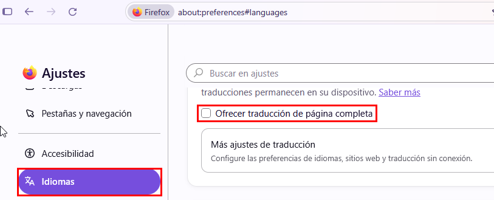
Entra en Inicio / Configuración / Sistema / Información, donde aparecen el almacenamiento usado y la RAM instalada.
Sube el pantallazo1, en el que se vea lo que está recuadrado en rojo en este: la carpeta con tunombre, Firefox en la barra de tareas, el almacenamiento y la RAM.
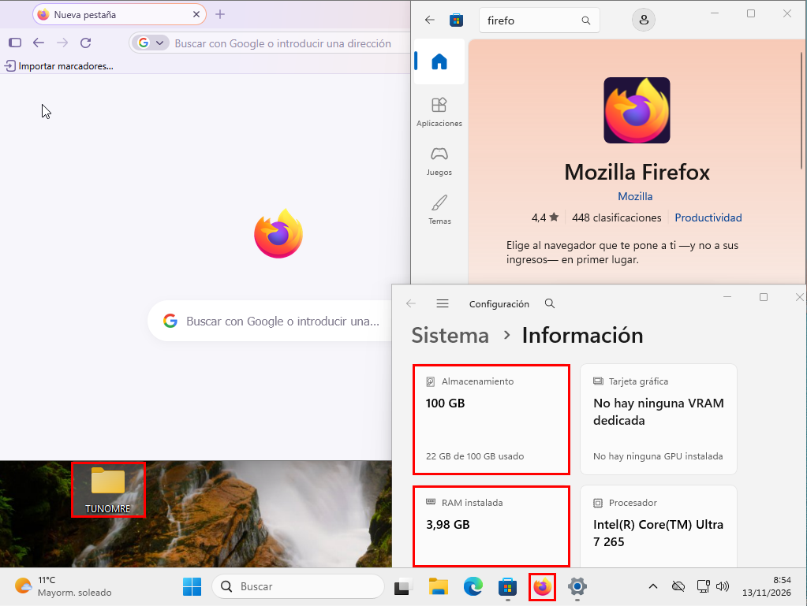
Rendimiento de Windows
Consulta el apartado Administrador de tareas y sube:
El pantallazo2, con el rendimiento de tu CPU.
El pantallazo3, con los procesos que se están ejecutando, con el botón Finalizar tarea a la vista.
El pantallazo4, con el Monitor de recursos.
Hardware y software
1.1 Abre la información del sistema con el comando
msinfo32. Esta herramienta muestra un resumen del equipo (sistema operativo, procesador, BIOS, memoria) y, en el árbol de la izquierda, el detalle de los recursos de hardware, los componentes y el entorno de software. Escribe:El procesador.
La versión y fecha de la BIOS.
La memoria física total.
1.2 Abre la herramienta de diagnóstico de DirectX con el comando
dxdiag. Si te pregunta si quieres comprobar las firmas de los controladores, pulsa No. Esta herramienta informa de los componentes y controladores de DirectX instalados. Busca y escribe:En la pestaña Sistema, la versión de DirectX.
En la pestaña Sistema, la arquitectura del sistema operativo: x64 o x86 (es decir, 64 bits o 32 bits).
En la pestaña Pantalla, el nombre del adaptador.
CPU-Z
CPU-Z es una aplicación gratuita para Windows que muestra información del procesador, la memoria y la placa base: nombre, número y nombre en clave del procesador, etc.
No está en Microsoft Store: descárgala de su página web e instálala. Ábrela dos veces para tener a la vista la pestaña CPU y la pestaña Bench, y pulsa Bench CPU.
Ayuda: la página de descarga es un poco liosa y tiene mucha publicidad. Elige el instalador en inglés (setup · english), pulsa el botón DOWNLOAD NOW! e instálalo con las opciones por defecto:
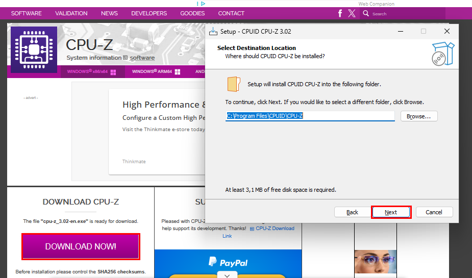
Sube el pantallazo5, en el que se vean los datos de la CPU, el resultado del benchmark y la carpeta con tunombre, como este:
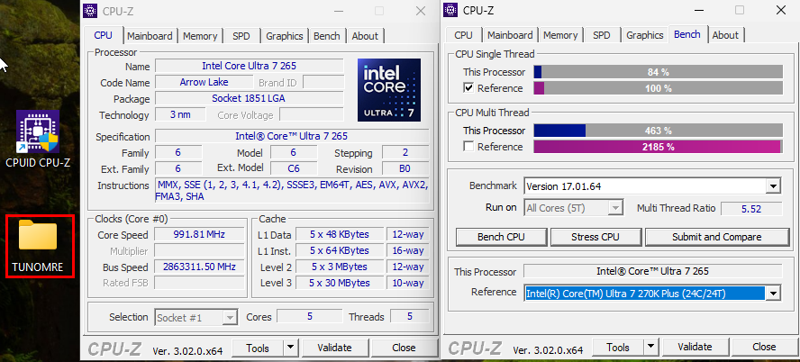
Cuando hayas subido el pantallazo, desinstala CPU-Z:
Inicio / Configuración / Aplicaciones / Aplicaciones instaladas.
Busca CPUID CPU-Z en la lista, pulsa los tres puntos (…) de su derecha y elige Desinstalar.
Sube el pantallazo6, justo antes de pulsar Desinstalar, en el que se vea tunombre en la cuenta de usuario, como este:
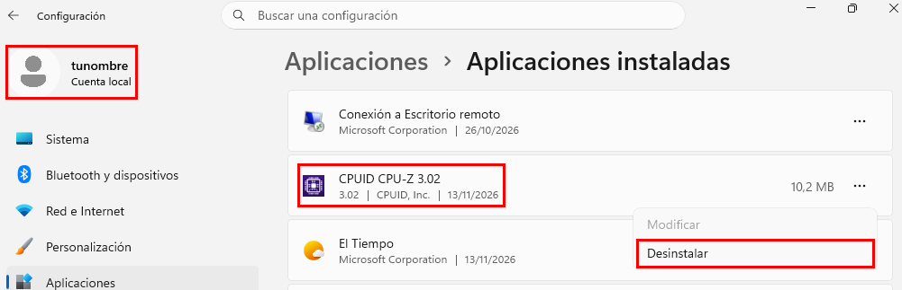
WinDirStat
WinDirStat (https://windirstat.net/) analiza qué es lo que más ocupa en las unidades de disco. Descárgalo y analiza el disco duro.
Sube el pantallazo7, con el resultado del análisis y tu carpeta de usuario (C:\Users\tunombre) seleccionada, como este:
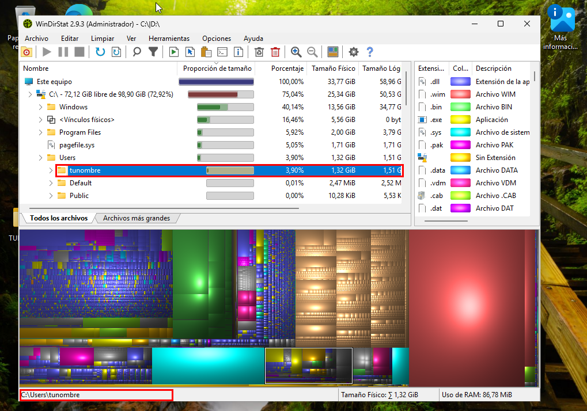
Responde:
1.3 ¿Bajo qué licencia está publicado?
1.4 ¿Existe una versión para Linux y macOS?
Ejercicio 2: Escritorio y explorador#
Acceso directo en el escritorio
Crea un acceso directo a la calculadora en el escritorio. La calculadora se abre con el comando
calc.exe.Sube el pantallazo1.
Opciones de Windows
2.1 Cambia el protector de pantalla y configúralo para que el monitor se apague a los 15 minutos y los discos duros no se apaguen nunca. ¿Cómo lo has hecho?
Haz que se vean los archivos ocultos.
Comprime la carpeta con tunombre que tienes en el escritorio.
Abre el explorador y ve a
C:\Usuarios\tunombre.
Sube el pantallazo2, en el que se vea lo que está recuadrado en rojo en este: la carpeta comprimida en el escritorio, la ruta, y la carpeta AppData y el fichero NTUSER.DAT, que están ocultos.
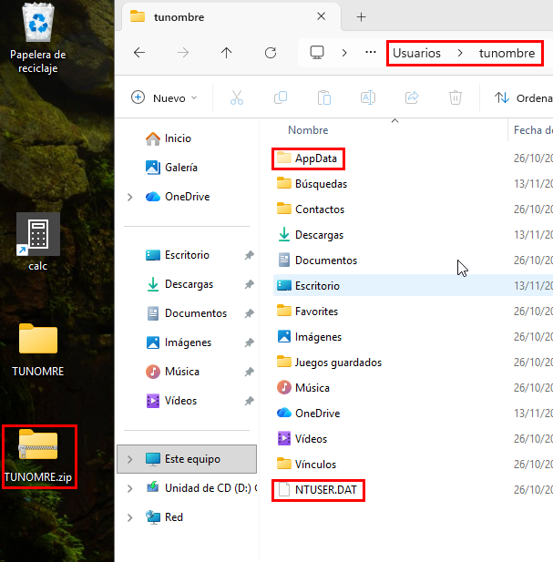
Búsquedas
Consulta el apartado Explorador de Windows y responde:
2.2 Busca todos los archivos de C: que empiecen por no y acaben por exe. ¿Cómo lo has hecho?
2.3 ¿Cómo buscarías todos los ficheros de
C:\Windows(incluidas las subcarpetas) que empiecen por M, con cualquier extensión?2.4 ¿Cómo buscarías todos los ficheros creados hace un mes?
2.5 ¿Cómo buscarías todos los ficheros de
C:\Windows(incluidas las subcarpetas) que contengan la palabra Multimedia?2.6 ¿Cómo buscarías todos los ficheros creados entre el 1 de enero de 1999 y hoy que contengan la palabra Screen?
2.7 ¿Cómo buscarías todos los ficheros con un tamaño máximo de 300 KB?
La papelera
Dentro de la carpeta con tunombre que tienes en el escritorio, crea la siguiente estructura de carpetas:
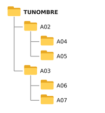
Selecciona la carpeta con tunombre con el ratón y pulsa Supr.
Abre la papelera y sube el pantallazo3, antes de restaurarla, en el que se vean la carpeta con tunombre, su Ubicación original y su Fecha eliminación, como este:
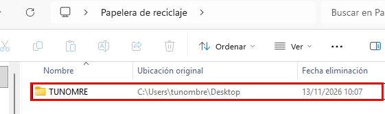
Restáurala. 2.8 ¿Cuánto espacio disponible tiene la papelera?
Vuelve a seleccionar la carpeta con tunombre en el escritorio y pulsa Mayús + Supr. 2.9 ¿Puedes volver a restaurarla?
Ejercicio 3: Equipo y red#
Cambiar el nombre del equipo
Abre una terminal (Win+R y escribe
cmd) y ejecuta el comandohostname.Cambia el nombre del equipo por PC-tuapellido1:
Inicio / Configuración / Sistema / Información
Cambiar el nombre de este equipo
Reinicia el equipo y vuelve a ejecutar
hostname. El nombre nuevo tiene que verse en el pantallazo del apartado siguiente.
Dirección IPv4 estática
Pon la máquina virtual en adaptador puente y configura en Windows:
Dirección IP: 10.4.X.Y/8 (máscara 255.0.0.0)
Puerta de enlace: 10.0.0.2
DNS: 8.8.8.8
Si usas un portátil, déjalo en DHCP.
Comprueba la configuración en la máquina virtual con ipconfig, que tiene salida a internet con ping -n 2 www.google.com y el nombre del equipo con hostname. En el anfitrión, ejecuta también ipconfig.
Sube el pantallazo1, en el que se vean a la vez el anfitrión y la máquina virtual, como este:
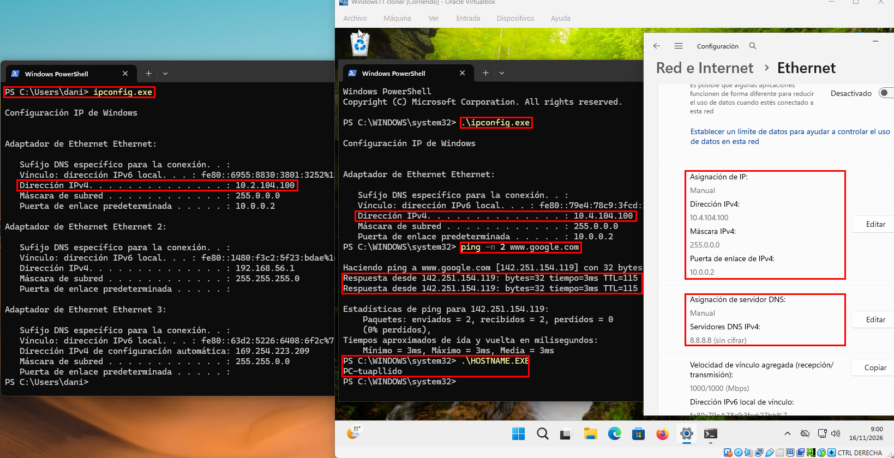
Tiene que verse lo que está recuadrado en rojo:
En el anfitrión,
ipconfigy su dirección IPv4.En la máquina virtual,
ipconfigy su dirección IPv4, elpingcon las respuestas yhostnamecon PC-tuapellido1.En la configuración de la tarjeta de red de la máquina virtual, la IP, la máscara, la puerta de enlace y el DNS puestos a mano.
Ping y cortafuegos
Por defecto, el cortafuegos de Windows no responde al ping que llega de otros equipos.
Desde el anfitrión, haz
pinga la IP de la máquina virtual (10.4.X.Y). 3.1 ¿Responde?
En la máquina virtual, crea una regla de entrada en el cortafuegos que permita el ping:
Abre el cortafuegos con
wf.msc, selecciona Reglas de entrada y, a la derecha, pulsa Nueva regla… En Tipo de regla, elige Personalizada: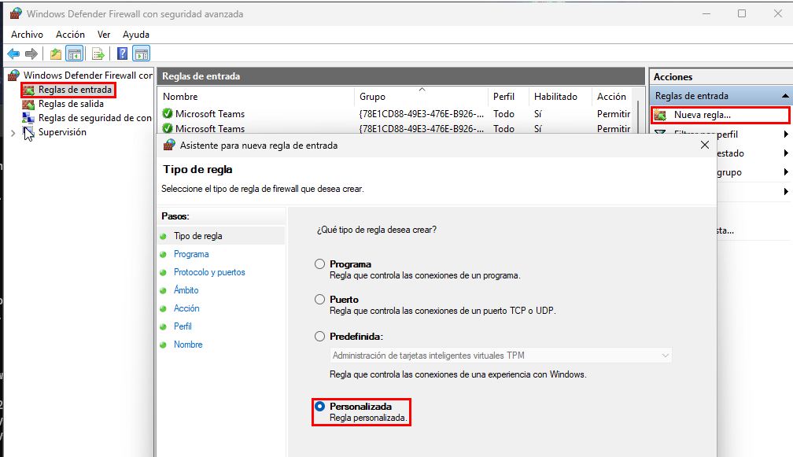
Programa: Todos los programas.
Protocolo y puertos: en Tipo de protocolo elige ICMPv4 y pulsa Personalizar…; marca Tipos específicos de ICMP y, dentro, Solicitud de eco:
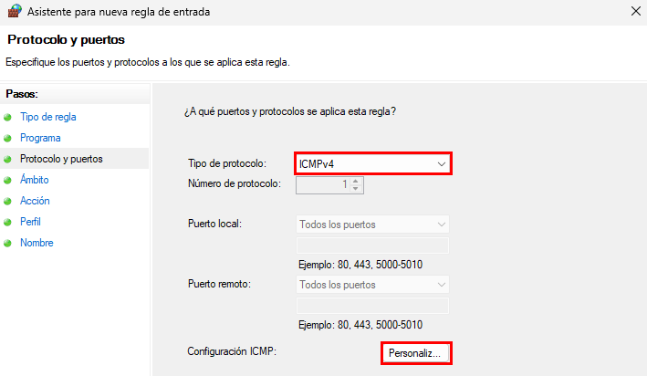
Ámbito: deja Cualquier dirección IP en las dos listas.
Acción: Permitir la conexión.
Perfil: deja marcados Dominio, Privado y Público.
Nombre: Ping tunombre, y pulsa Finalizar:
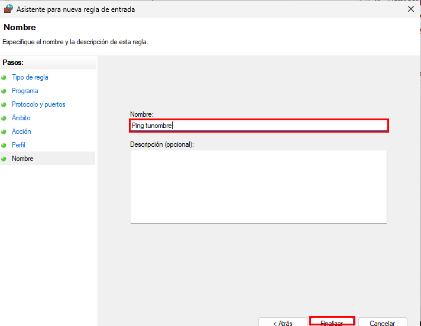


Vuelve a hacer ping desde el anfitrión y sube el pantallazo2, en el que se vean el ping sin respuesta, el ping con respuesta y la regla Ping tunombre en Reglas de entrada, como este:
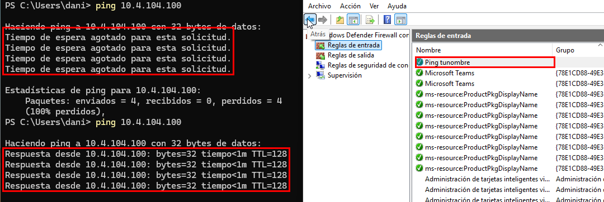
3.2 Windows ya trae una regla para esto, deshabilitada. Búscala en Reglas de entrada de
wf.msc(contiene «ICMPv4» en el nombre). ¿Cómo se llama?
Nota
La misma regla se puede crear con un comando, desde el Símbolo del sistema como administrador:
netsh advfirewall firewall add rule name="Ping tunombre" protocol=icmpv4:8,any dir=in action=allow
icmpv4:8 es el tipo 8 de ICMP, la solicitud de eco que envía ping.
Escritorio remoto
Conéctate a Windows por escritorio remoto. Antes tienes que habilitarlo en Configuración / Sistema / Escritorio remoto. Windows 11 Home no admite conexiones de escritorio remoto, y la cuenta con la que te conectes tiene que tener contraseña.
Si te conectas desde Linux:
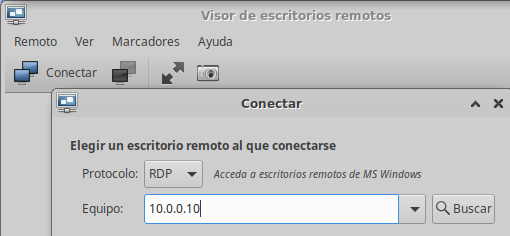
Si te conectas desde Windows, abre en el anfitrión el programa Conexión a Escritorio remoto de una de estas formas:
Escribe «Conexión a Escritorio remoto» en el menú Inicio.
Pulsa Win+R y escribe
mstsc.
En Equipo, escribe la IP de la máquina virtual (10.4.X.Y), no su nombre, y pulsa Conectar. Como usuario, pon tunombre y su contraseña. Fíjate bien en la IP: si te equivocas, sale el error 0x204 («Escritorio remoto no se puede conectar al equipo remoto»).
Ayuda: así se ve el escritorio remoto activado en la máquina virtual y la conexión desde el anfitrión:
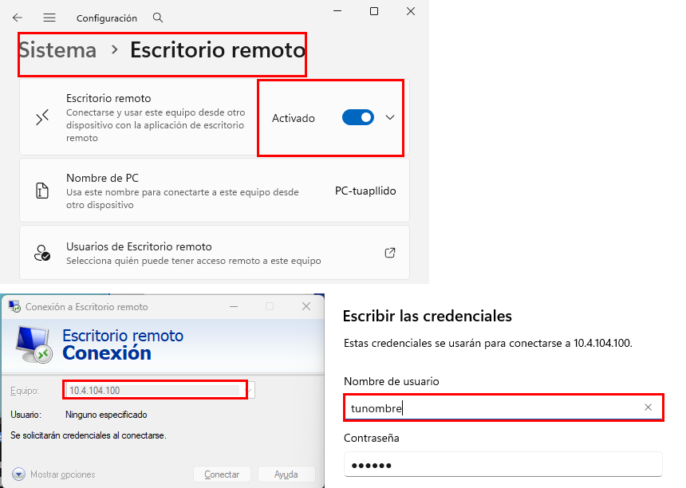
También puedes abrirlo directamente con la IP:
mstsc /v:10.4.X.Y.Si la ventana remota sale demasiado grande, antes de conectar pulsa Mostrar opciones, ve a la pestaña Pantalla y baja la resolución con el control deslizante. Con la conexión ya abierta, Ctrl+Alt+Pausa alterna entre pantalla completa y ventana.
Dentro de la sesión remota, abre PowerShell y ejecuta
ipconfig,query session,whoamiynetstat -an | findstr 3389. En el anfitrión, ejecuta tambiénnetstat -an | findstr 3389eipconfig.Sube el pantallazo3, en el que se vean la ventana del escritorio remoto y la terminal del anfitrión, como este:
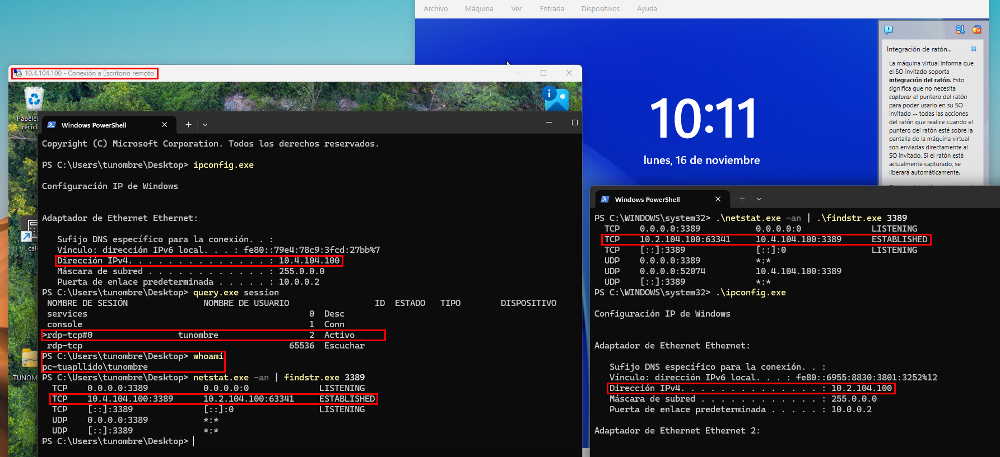
Tiene que verse lo que está recuadrado en rojo:
En el título de la ventana, la IP a la que te has conectado.
En la máquina virtual: su IP; tu sesión
rdp-tcp#0con el usuario tunombre en estado Activo;whoamicon el equipo y el usuario, y la conexión ESTABLISHED denetstat.En el anfitrión: la misma conexión ESTABLISHED vista desde el otro lado y su IP.
netstat -anmuestra las conexiones de red del equipo (-a, todas;-n, con IP y puerto en número, sin traducir a nombres) yfindstr 3389deja solo las líneas del puerto 3389, que es el del escritorio remoto. Cada línea tiene el protocolo, la dirección local, la dirección remota y el estado:0.0.0.0:3389 … LISTENING: la máquina virtual está escuchando en el puerto 3389 en todas sus IP, esperando conexiones.10.4.X.Y:3389 10.2.X.Y:63341 ESTABLISHED: la conexión establecida entre el puerto 3389 de la máquina virtual y un puerto alto del anfitrión, que Windows elige al azar para cada conexión.En el anfitrión aparece la misma conexión al revés: su dirección local es la del puerto alto y la remota es la de la máquina virtual con el puerto 3389.
Las líneas
UDPson porque el escritorio remoto también usa UDP en el puerto 3389 para ir más fluido.

Resolución de nombres
Consulta el apartado Resolución de nombres en Windows y responde:
3.3 Ejecuta
ipconfig /all. ¿Qué servidores DNS tiene configurados tu tarjeta de red?3.4 Ejecuta
nslookup www.educa.madrid.org. ¿Qué servidor ha respondido y qué IP tiene ese nombre?3.5 Ejecuta
nslookup www.educa.madrid.org 1.1.1.1. ¿Qué ha cambiado en la respuesta?
Ahora vas a dar un nombre a tu equipo sin usar el DNS:
Abre el Bloc de notas como administrador y añade al final del fichero
C:\Windows\System32\drivers\etc\hostsuna línea con tu IP y el nombre tunombre.aula:10.4.X.Y tunombre.aula
Si usas un portátil con DHCP, pon la IP que te muestre
ipconfig.Ejecuta
ping tunombre.aulaynslookup tunombre.aula.Sube el pantallazo4, donde se vean el contenido del fichero hosts y el resultado de los dos comandos.
Responde:
3.6 ¿Por qué
pingencuentra el nombre ynslookupno?3.7 Ejecuta
ipconfig /displaydnsy despuésipconfig /flushdns. ¿Qué hace cada uno?
NAT y reenvío de puertos
Hasta ahora la máquina virtual estaba en adaptador puente, como un equipo más de la red de clase, y por eso el anfitrión llegaba a ella directamente. Ahora la vas a poner en NAT: VirtualBox coloca un router entre la máquina virtual y la red, así que la máquina virtual sale a internet, pero desde fuera (incluido el anfitrión) no se puede llegar a ella. Para eso está el reenvío de puertos: lo que llega a un puerto del anfitrión se redirige a un puerto de la máquina virtual. Consulta los modos de red en VirtualBox.
Cambia la red a NAT:
Antes de nada, abre el Bloc de notas como administrador y borra del fichero
C:\Windows\System32\drivers\etc\hostsla línea de tunombre.aula que añadiste en el apartado anterior: con NAT la máquina virtual va a cambiar de IP y esa línea dejaría de ser correcta.En VirtualBox, en Configuración / Red / Adaptador 1, cambia Conectado a por NAT. Se puede hacer con la máquina encendida.
En Windows, la IP fija 10.4.X.Y ya no sirve: en Configuración / Red e Internet / Ethernet, pon Asignación de IP y Asignación de servidor DNS en Automático (DHCP).
Ejecuta
ipconfig /allyping -n 2 www.google.com.
Responde:
3.8 ¿Qué IP, puerta de enlace y servidor DNS tiene ahora la máquina virtual? ¿Quién se los ha dado?
3.9 Desde el anfitrión, haz
pinga la IP de la máquina virtual. ¿Responde? ¿Y elpinga internet desde la máquina virtual?
Ahora crea el reenvío de puertos para el escritorio remoto. En VirtualBox, en Configuración / Red / Adaptador 1 / Avanzadas / Reenvío de puertos, añade esta regla:
Nombre |
Protocolo |
IP anfitrión |
Puerto anfitrión |
IP invitado |
Puerto invitado |
|---|---|---|---|---|---|
RDP |
TCP |
127.0.0.1 |
33389 |
10.0.2.15 |
3389 |
Es decir, lo que llegue al puerto 33389 del anfitrión se manda al puerto 3389 (escritorio remoto) de la máquina virtual. No se usa el 3389 en el anfitrión porque puede estar ocupado por su propio escritorio remoto.
Conéctate desde el anfitrión con Conexión a Escritorio remoto, poniendo en Equipo
127.0.0.1:33389: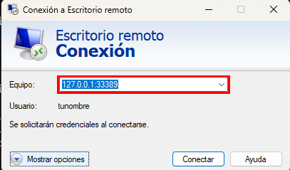
Dentro de la sesión remota, ejecuta
ipconfigynetstat -an | findstr 3389. En el anfitrión, ejecuta tambiénnetstat -an | findstr 3389, que muestra tanto el puerto 3389 como el 33389.Sube el pantallazo5, como este:
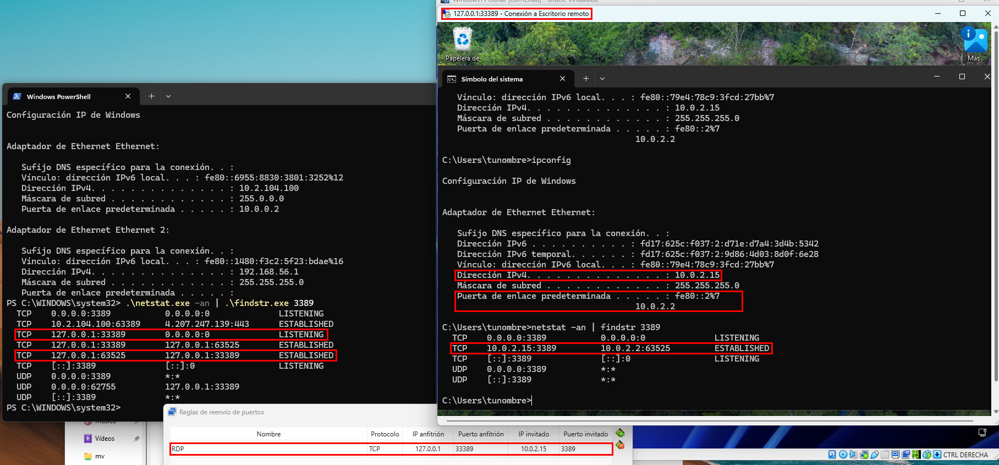
Tiene que verse lo que está recuadrado en rojo:
En el título de la ventana, la conexión a
127.0.0.1:33389.En la máquina virtual: su IP 10.0.2.15, la puerta de enlace 10.0.2.2 y la conexión ESTABLISHED al puerto 3389. Fíjate en que la conexión no llega desde la IP del anfitrión, sino desde la 10.0.2.2: es el router de VirtualBox, que recibe la conexión en el puerto 33389 del anfitrión y la abre de nuevo hacia la máquina virtual en su nombre. La máquina virtual nunca ve al anfitrión directamente; solo ve a su router.
En el anfitrión: el puerto 33389 en LISTENING (es VirtualBox, esperando para reenviar) y la conexión ESTABLISHED de
mstsccontra él.En VirtualBox, la regla de reenvío de puertos.
Ayuda: al cambiar de red, Windows puede considerarla una red nueva y ponerla como pública. Si no conecta, pon la red como privada en Configuración / Red e Internet / Ethernet.
SSH por el puerto 2222
Vas a añadir un segundo reenvío de puertos, esta vez para conectarte a la máquina virtual por ssh. Windows 11 trae el cliente de ssh, pero el servidor OpenSSH hay que instalarlo.
Instalar el servidor OpenSSH en la máquina virtual
Inicio / Configuración / Sistema / Características opcionales y pulsa Ver características.
Busca Servidor OpenSSH, márcalo y pulsa Siguiente e Instalar. Tarda un poco, porque lo descarga de internet:
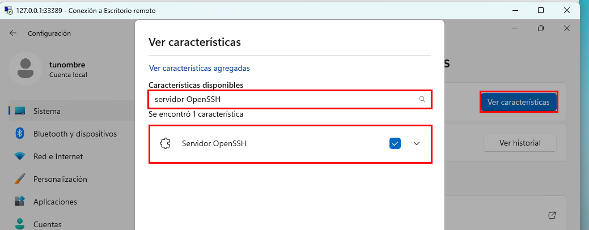

Al instalarlo, Windows crea también la regla del cortafuegos que abre el puerto 22. Para verla, abre el cortafuegos (pulsa Win+R y escribe wf.msc, o busca «Windows Defender Firewall con seguridad avanzada» en el menú Inicio) y, en Reglas de entrada, busca la de OpenSSH. Si después no puedes conectarte, mira su columna Perfil: si no incluye Público, haz doble clic en la regla (OpenSSH SSH Server (sshd)) y márcalo en la pestaña Opciones avanzadas:

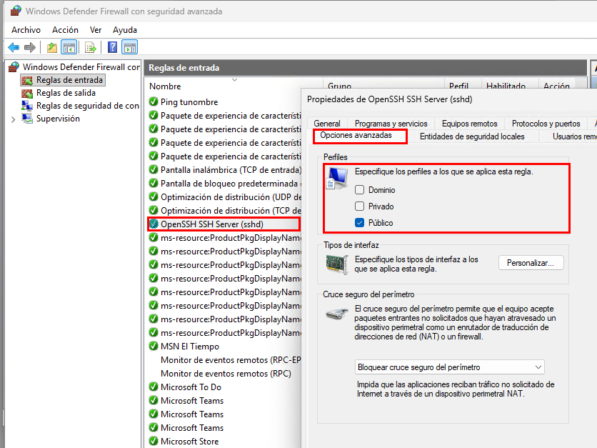
Arrancar el servidor
El servidor de ssh es un servicio de Windows, sshd, que se instala detenido. Arráncalo desde la consola de servicios:
Pulsa Win+R y escribe
services.msc.Busca OpenSSH SSH Server y haz doble clic sobre él.
En Tipo de inicio, elige Automático, para que arranque solo con Windows.
Pulsa Iniciar y después Aceptar. En la lista, su estado tiene que ser En ejecución:
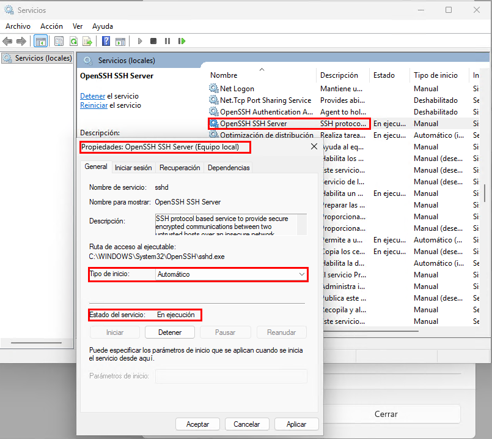

Reenvío de puertos y conexión
En VirtualBox, en Configuración / Red / Adaptador 1 / Avanzadas / Reenvío de puertos, añade una segunda regla:
Nombre
Protocolo
IP anfitrión
Puerto anfitrión
IP invitado
Puerto invitado
SSH
TCP
127.0.0.1
2222
10.0.2.15
22
Desde una terminal del anfitrión (sirve igual en Windows y en Linux), conéctate con el usuario tunombre y su contraseña. La primera vez te preguntará si confías en la huella del servidor: responde
yes.ssh -p 2222 tunombre@127.0.0.1
Ayuda: puede que en vez de pedirte la contraseña salga
WARNING: REMOTE HOST IDENTIFICATION HAS CHANGED!yHost key verification failed: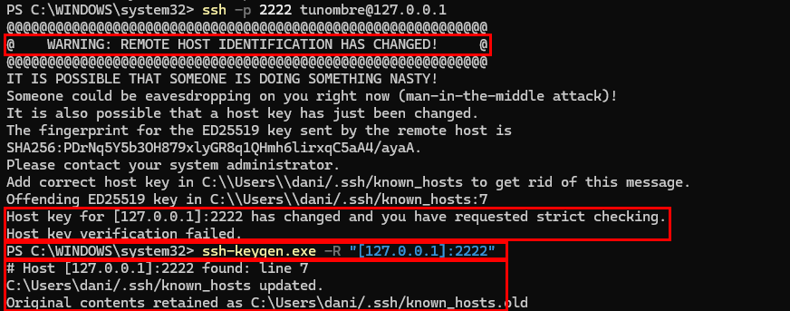
Qué pasa: la primera vez que te conectas a un servidor,
sshguarda su huella (la clave pública con la que se identifica el servidor) en el ficheroknown_hostsde tu usuario (C:\Users\tuusuario\.ssh\known_hosts), asociada a la IP y al puerto. En las conexiones siguientes la compara, y si no coincide se niega a conectar: podría ser otra máquina haciéndose pasar por el servidor para robarte la contraseña (un ataque man-in-the-middle). Aquí no es un ataque: en127.0.0.1y el puerto 2222 antes respondía otra máquina (por ejemplo, Ubuntu Server de los ejercicios de VirtualBox) y ahora responde Windows.Cómo se corrige: borra la huella antigua con
ssh-keygen -R. Te dice en qué línea estaba y guarda una copia del fichero comoknown_hosts.old:ssh-keygen -R "[127.0.0.1]:2222"Vuelve a conectarte: como ya no tiene huella guardada, te pregunta si confías en la nueva; responde
yesy escribe la contraseña.Dentro de la sesión de
ssh, ejecutahostnameynetstat -an | findstr :22.Sube el pantallazo6, como este:
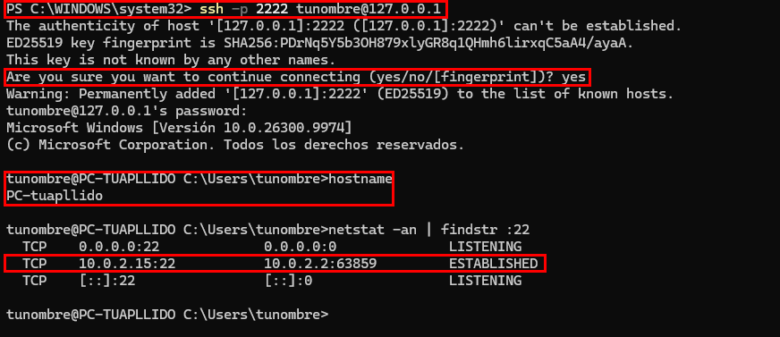
Tiene que verse lo que está recuadrado en rojo:
El comando
sshcon el puerto 2222 y la respuestayesa la huella.El indicador
tunombre@PC-tuapellido1y la salida dehostname, que demuestran que estás dentro de la máquina virtual.La conexión ESTABLISHED al puerto 22.
Responde:
3.10 En el
netstatde la máquina virtual, ¿desde qué IP y a qué puerto llega la conexión dessh? ¿Por qué es el 22 y no el 2222?3.11 ¿Qué diferencia hay entre conectarte por escritorio remoto y por
ssh?
Ejercicio 4: Discos y copias de seguridad#
Disco duro nuevo
Con la máquina de Windows 11 apagada, en Configuración / Almacenamiento añade un disco nuevo de 50 GB reservado dinámicamente.
Selecciónalo y marca Conectable en caliente.
Arranca Windows y busca en Inicio Crear y formatear particiones del disco duro.
Dale formato NTFS, con la etiqueta «tunombre tuapellido1», y móntalo en la unidad E:. Sube el pantallazo1, como este:
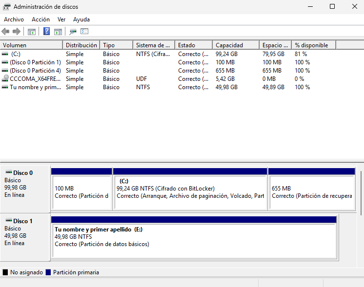
Historial de archivos
Vamos a hacer una copia de seguridad con el Historial de archivos (escribe «Historial de archivos» en el menú Inicio).
Activa el Historial de archivos:
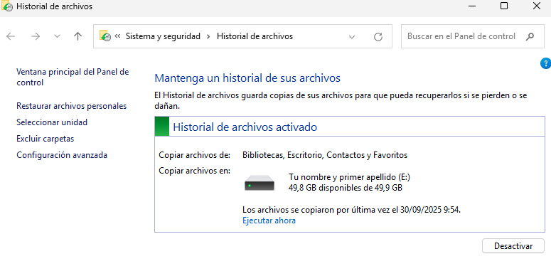
Selecciona la unidad E: que has creado en el apartado anterior:
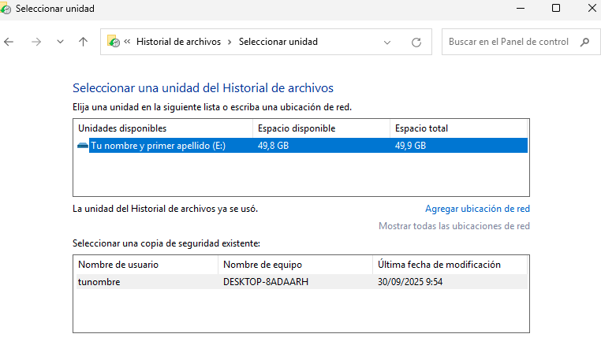
Ejecuta ahora la copia de seguridad:
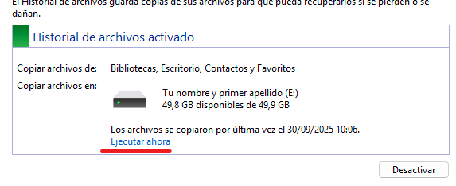
Cuando termine, borra de forma permanente algunos archivos del escritorio y pulsa Restaurar archivos personales:
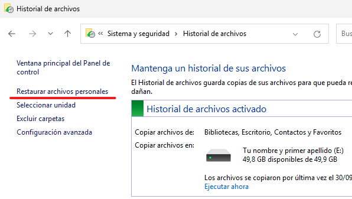
Sube el pantallazo2, del proceso de restauración, como estos:
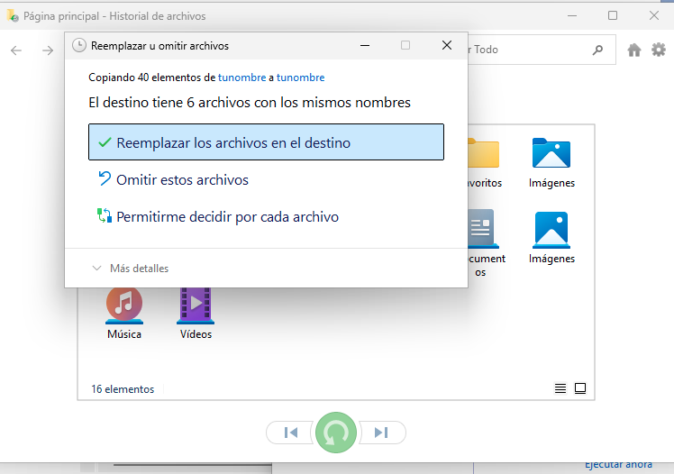
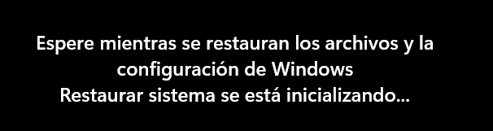
Copia de seguridad de los controladores
Con la herramienta DISM puedes exportar a una carpeta los controladores instalados. Si reinstalas Windows, puedes volver a instalarlos desde esa carpeta (en otra partición, un USB o un disco externo) sin programas de terceros.
Instala el controlador de una impresora (la que quieras).
Abre el Símbolo del sistema como administrador.
Ejecuta:
dism /online /export-driver /destination:e:\Controladores
Sube el pantallazo3, en el que se vea la carpeta
E:\Controladores, por ejemplo: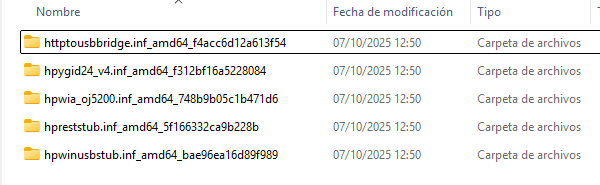
Nota
DISM solo exporta los controladores de terceros, no los de Microsoft. VirtualBox usa controladores genéricos de Microsoft, por eso, si usas una máquina virtual, la carpeta puede quedar vacía. Si instalas antes las Guest Additions de VirtualBox, aparecerán sus controladores.
Ejercicio 5: Recuperación y registro#
Punto de restauración
Los puntos de restauración permiten devolver el sistema a una fecha anterior. Es útil si una actualización o un programa nuevo da problemas.
En el cuadro de búsqueda de la barra de tareas, escribe Crear un punto de restauración y selecciónalo.
Crea un punto de restauración con el nombre de la fecha actual + tunombre (la primera vez tendrás que activar la protección del sistema).
Instala GIMP con el instalador de https://www.gimp.org (no desde Microsoft Store).
Crea una carpeta en el escritorio con la fecha y hora actual y tu nombre de usuario.
Restaura el punto de restauración que has creado (
rstrui.exe).
Sube el pantallazo1, del punto de restauración como este:
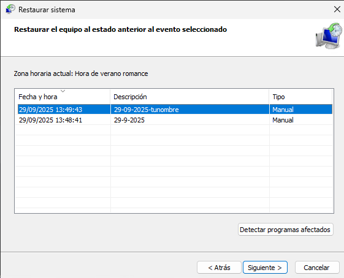
Responde:
5.1 ¿Qué ha pasado con GIMP?
5.2 ¿Los puntos de restauración afectan a los archivos personales?
Copia y modificación del registro
Consulta el apartado El registro de Windows antes de empezar.
Haz una copia de seguridad del registro de forma manual:
En el menú Inicio, escribe
regedit.exey pulsa Intro. Si te pide contraseña de administrador o confirmación, dásela.En el Editor del Registro, haz clic en la clave o subclave de la que quieras hacer la copia.
Haz clic en Archivo / Exportar.
Elige dónde guardar la copia y escribe un nombre en Nombre de archivo.
Haz clic en Guardar.
No hace falta que la restaures, pero si lo necesitaras:
Abre
regedit.exe.Haz clic en Archivo / Importar.
Selecciona el archivo de la copia y haz clic en Abrir.
Ahora vamos a añadir un programa al menú contextual (el del botón derecho en el escritorio):
Ve a la clave
HKEY_CLASSES_ROOT\Directory\Background\shell.Dentro de
shell, crea una clave nueva con el nombre del programa (por ejemplo,Notepad) y, dentro de ella, otra clave llamadacommand.La clave
commandtiene un valor (Predeterminado). Haz doble clic sobre él y escribe, entre comillas, la ruta del.exedel programa: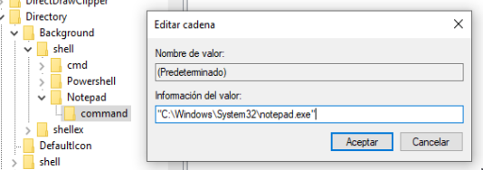
En Windows 11 la entrada nueva no sale en el menú contextual reducido: pulsa Mostrar más opciones (o Mayús + F10) para ver el menú completo.
Elige una aplicación distinta de Notepad, crea su entrada en el menú contextual y sube el pantallazo2, como este:
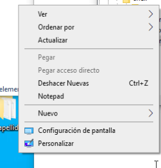
Widgets y modo oscuro
Para quitar los widgets de noticias e intereses de Windows 11, entra en
HKEY_LOCAL_MACHINE\SOFTWARE\Policies\Microsofty crea una clave llamadaDsh. Dentro, crea un valor DWORD (32 bits) llamadoAllowNewsAndInterestscon el valor0.Activa el modo oscuro: en
HKEY_CURRENT_USER\SOFTWARE\Microsoft\Windows\CurrentVersion\Themes\Personalize, haz doble clic enAppsUseLightThemey cambia el valor1por0.Sube el pantallazo3, donde se vea el cambio y tunombre.
Fondo de escritorio
Descarga dos imágenes relacionadas con la astronomía.
Pon una de ellas como fondo de escritorio. Como Windows no está activado, hazlo desde el explorador:
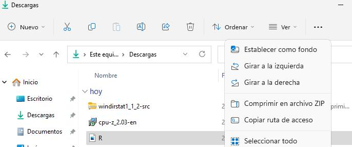
En el registro, ve a
HKEY_CURRENT_USER\Control Panel\Desktop, haz clic con el botón derecho y elige Exportar. Guarda la copia en el escritorio con el nombredesktop.reg.Cambia el valor
WallPaperpor la ruta de la otra imagen: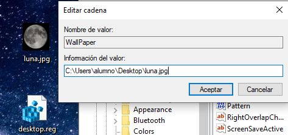
Reinicia el ordenador. 5.3 ¿Qué fondo tiene ahora?
Restaura la copia
desktop.regque dejaste en el escritorio.Reinicia el ordenador. 5.4 ¿Qué fondo tiene ahora?
Cuestionario de configuración#
Para repasar, haz el Cuestionario configuración Windows.